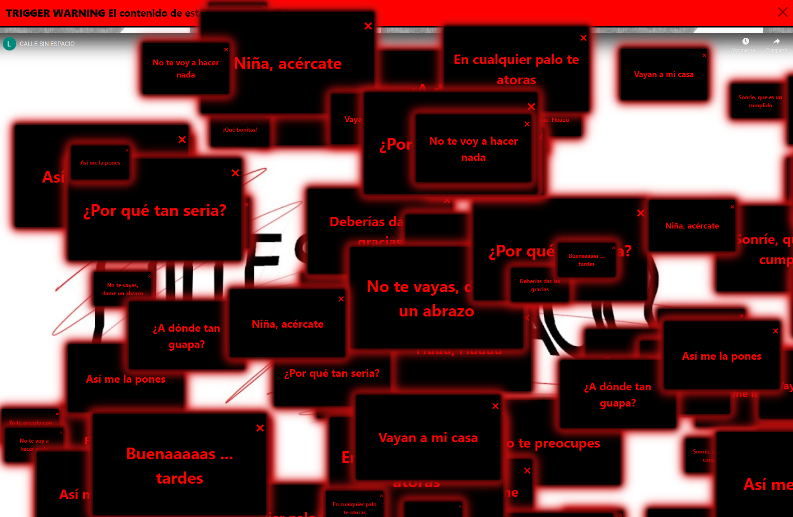
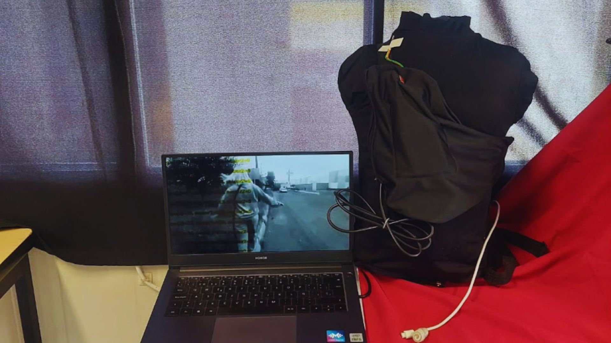
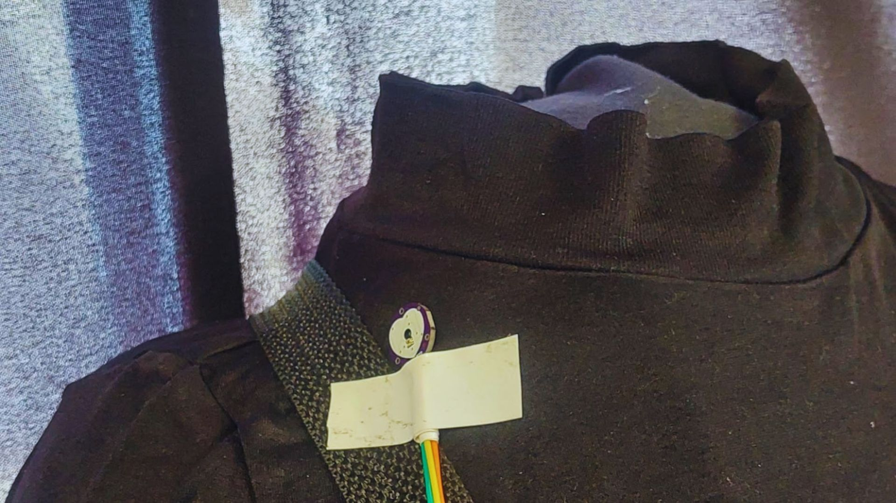

2023
COLECTIVO ENCAJE
Web Art / Videoarte
CALLE SIN ESPACIO es una pieza de web art que aborda la problemática del acoso callejero. Haciendo uso de elementos emergentes y el videoarte, para ilustrar experiencias recolectadas a través de entrevistas.
CALLE SIN ESPACIO ilustra y recolecta las vivencias de las mujeres ante el acoso callejero, expresión de violencia de género, en Lerma. Se hace uso de una paleta monocromática en escala de grises con un pop de color rojo, usando este último como un contraste que señala peligros apoyado en la psicología del color. El conjunto de elementos emergentes crea una sensación de intrusividad en el espectador aludiendo al sentimiento común que pueden experimentar las víctimas de acoso callejero.
ALERTA CONSTANTE
2023
COLECTIVO ENCAJE
Wereable / Videoarte
ALERTA CONSTANTE, se conforma de una pechera que permite el monitoreo de pulsaciones cardíacas de la usuaria. Y la documentación de estos datos el transitar espacios públicos, presentados a través de un videoarte.
ALERTA CONSTANTE es una pieza que comprende un artefacto interactivo wearable a modo de pechera que permite el monitoreo de pulsaciones cardíacas de la usuaria. El cuerpo se encuentra interactuando directamente con circuitos electrónicos a través de sus funciones fisiológicas.
El acoso callejero, acciones violentas, arraigadas en nuestra sociedad, han y siguen teniendo consecuencias directas sobre nuestro estado anímico, manifestadas también a través de nuestros signos vitales.
Para una mujer, el transitar espacios públicos resulta una fuente frecuente de ansiedad, un sometimiento al estado de alerta al ser consciente de los peligros que esto conlleva.
La pieza realiza un monitoreo del pulso cardiaco de una mujer en su día a día. Construyendo un registro de su sentir.
ALERTA CONSTANTE no es una pieza que busque registrar la cantidad o cualidad del acoso recibido, sino, más bien refiere a usar la fisiología de la interactora como el facilitador de información, el evidenciador de una sensación de alerta que nunca desaparece al ser una mujer transitando por un espacio público que no parece tener una pertenencia compartida.
El artefacto se construye a partir del uso del sistema Arduino, un sensor cardíaco, y un sensor de contacto, dentro de una mochila de tela.
Adelitas Escandalosas
2023
Videarte
Documentación de performance hecho por Adelitas Escandalosas en contra de la violencia verbal hacia la mujer.
Tomadas de manos y gritándonos entre nosotras mismas lo que se nos dice y reprocha día a día. Marchando por el espacio entre gritos catárticos, unidas por un carrete de infinitos metros de hilo, envoliéndonos entre nosotras, manchándonos y uniéndonos, volviéndonos una.
Museo Irreal
2023
Videarte
Alternancia entre recorridos en dos museos distintos.
¿Cómo se recorre un museo? ¿Cuáles son las perspectivas aceptadas?
Museo Irreal es un retrato de mi recorrido a estos museos. Una invitación a observar de cerca y cambiar
direcciones en la mirada.
Contando Arroz
2023
Performance / Documentación de performance
Comencé contando arroz,
grano por grano hasta llegar allí.
Comencé y seguí y seguí
¿Cuál era el punto de llegar hasta aquí?
Comencé contando granos
Terminé con un montón
y mientras el aire me los arrebataba,
solo en ti pensaba.
Contando arroz es un performance que consiste en sentarse en un espacio concurrido, vaciar un montón de arroz en la mesa y contar en voz alta, separando hasta llegar a 500.
Contando arroz me encontré con todas las penas que pasé, me enfrenté mí misma y a lo que dolía. El ejercicio empezó casi lúdicamente, como niña pequeña que aprende a contar. Pero escala y escala. Cada grano de arroz era algo que me habías hecho, era cada palabra hiriente y cada problema. Mientras más pensaba en ello, era cada pequeña pelea, cada afección, cada ausencia y cada día de duelo.
Con el tiempo y la repetitividad, los números se olvidan, la boca se queda sin saliva y las palabras se atoran en la garganta. El cuerpo se tensa, tiembla, se pelea a golpes con la mente ¿Cuál era el punto de contar? ¿Cuál era mi necedad de llegar a 500 sin parar?